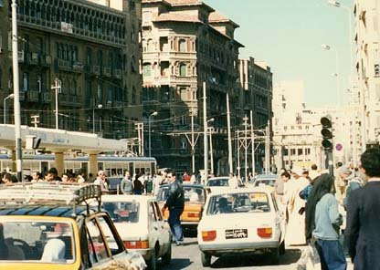

２５．「道路横断は怖い」
|
エジプト、アレキサンドリアにも道路には横断歩道が有ったと思う。エジプト人があまり横断歩道を使わないか
らなのか間隔が空いていたか無かった様にも思う、定かではない。ある日タクシーで町を見学していた、道路幅は
狭くはないが、道路の左右に荷車がおかれ人と車の通行も多く道路は狭く感じた。年の頃５０位の女性が頭に縦に
大きな籠を乗せて、両手で下の方を押さえている。肘が曲がり両肩から外に飛び出していた。そこに車が横を通り
過ぎた。瞬間我々は車が彼女にぶつかると思ったら、彼女は平然と車にぶつかると思われる左肘を前に向けただけ
で車をよけたのである。日本刀で間合いをとる極意を見たような気がした。スンゲェー。  ある日知人とレスランに行くことにした。タクシーは道路事情で道路の反対側に停車した。道路幅は広く片側３ 車線である。交通量は多く、車が途絶えそうにない。辺りを見回しても横断歩道はない。知人は私の手をつかみ渡 ろうと始める。え！ためらったが知人の強引な誘いで、仕方なく車の流れと平行に知人と並び渡ることにする。１ 車線分を無事に渡ると、体の前後に車は猛スピードで走り去る、怖い。更に間合いをみて１車線。初めの３車線は 車が左から来る、ここは日本と違って車は右側通行である。真ん中まで来る、ここでは車は体の前後を行き違うこ とになる。車のスピードは全く落としてくれない、コエーヨー。また、１車線ずつ渡ることになり無事渡った。一般に多くに人はこうやって道路横断をしているようである。しかし怖かった。交通量の多いところでは一人で は絶対にわたれない。 |